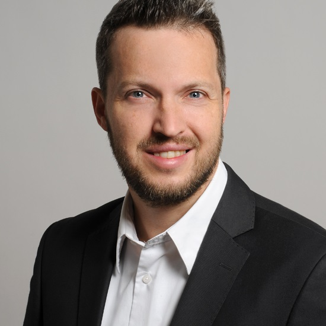
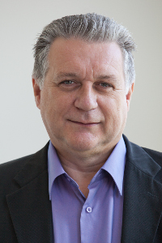
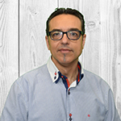
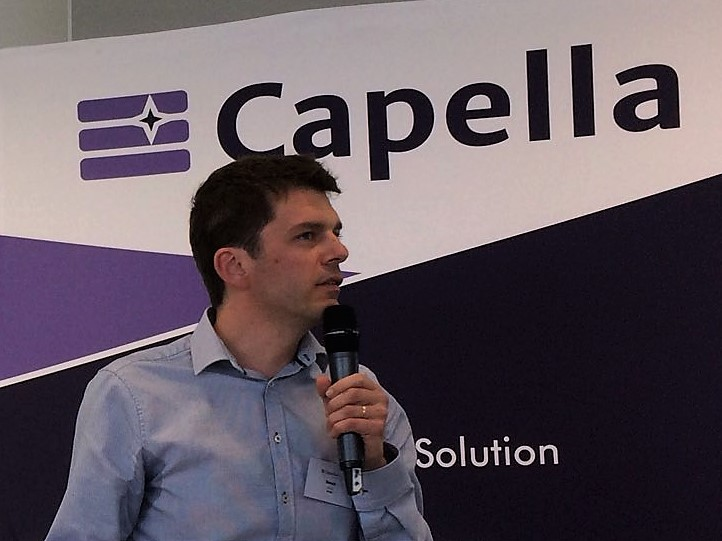

Talks
Augmenting requirements with models to improve the articulation between system
engineering levels and optimize V&V practices
Model-based systems engineering has developed significantly over the last few years, resulting in an
increased usage of models in systems specification and architecture description. The question of the
positioning of requirement engineering versus MBSE is a recurrent one.
This talk describes one vision of this articulation where textual and model requirements actually
complete each other. The results are improved contracts across engineering levels and more
formalized V&V practices.
Stéphane Bonnet, Thales Corporate Engineering
 |
Stéphane Bonnet is in charge of Thales Corporate MBSE Coaching and Design Authority of
the Capella open source modeling solution. For the last ten years, he has led the
development of Capella and has been an active contributor to the Arcadia model-based
method for systems, hardware and software architectural design. In Thales, he is
animating a wide community of modeling experts from all domains and countries to
investigate low-maturity modeling topics, capture end-user needs, and orient method and
workbench roadmaps. |
Model-based safety analysis on Capella using Component Fault Trees (CFTs)
The importance of mission or safety-critical software systems in many application domains of embedded
systems is continuously growing, and so is the effort and complexity for reliability and safety
analysis. Model-based system engineering (MBSE) is currently one of the key approaches to cope with
increasing system complexity.
With Component Fault Trees (CFTs) there is a model- and component-based methodology for safety
analysis, which extends the advantages of model-based development to safety & reliability
engineering. In this talk, we demonstrate how to ease the development of safety-critical systems in
industrial practice by extending MBSE in Capella with model-based safety analysis using Component
Fault Tree methodology.
Marc Zeller, Siemens Corporate Engineering
|  |
Marc Zeller works as a research scientist at Siemens AG, Corporate Technology, in Munich
since 2014. His research interests are focused on the model-based safety and reliability
engineering of complex software-intensive embedded systems. Marc Zeller studied Computer
Science at the Karlsruhe Institute of Technology (KIT) and graduated in 2007. He
obtained a PhD from the University of Augsburg in 2013 for his work on self-adaptation
in networked embedded systems at the Fraunhofer Institute for Embedded Systems and
Communication Technologies ESK in Munich. |
An Excel-based Systems-Engineering Tool for Knowledge Sharing and Collaboration
across the Enterprise
MapleMBSE is an Excel-based tool that makes it easy for every stakeholder to engage with the Systems
Engineering project without requiring them to be an expert in your primary SE tools.
MapleMBSE makes broad engagement possible with Excel-based, task-specific interfaces for each
activity in the systems design process.
By giving all stakeholders access to the process through a live, two-way connection to systems
model, you can ensure that all stakeholders can collaborate through the “single source of truth”,
allowing them to work faster, avoid errors, and reduce unbudgeted costs.
This presentation will demonstrate how MapleMBSE can be used for several use-cases on the Capella
platform, based on Maplesoft’s experience with NASA JPL in the US and Nissan in Japan.
Bharani Mohan, Maplesoft
|
Bharani is an MBSE specialist, and facilitates the improvement of the overall user
experience throughout the model-based system engineering process.
He works with customers to enhance their use of Maplesoft’s MapleMBSE platform,
providing guidance and assisting with issues. He also supports the development of
specific MapleMBSE features to encourage broader adoption.
With a background in Aerospace Engineering, Bharani has experience applying MBSE design
methodologies in conceptual design of aircraft systems architecture, and translating
design requirements into system architecture. |
Paul Goossens, Maplesoft
|  |
Paul Goosseens is Vice President MBSE Solutions at Maplesot. A mechanical engineer by
background, he has over 25 years of experience in technical and business management,
primarily in advanced computational technologies for engineering applications.
He has built a strong reputation as an expert in modeling, simulation and analysis of
complex multi-domain systems for virtual prototyping and control software testing,
spending a good part of his career promoting model-based methodologies within the
automotive, aerospace and manufacturing industries.
He currently manages the Model-based Systems Engineering business unit at Maplesoft,
charged with executing strategies for the development of new markets, product planning,
sales and marketing support, service business development, and strategic partnerships.
|
Capella integration with RAT - Authoring Tools
To be published soon
José Fuentes, The Reuse Company
|  |
José Fuentes obtained his degree in Information Science at the Carlos III University of
Madrid (Spain).
After getting his degree, he founded, together with other 5
colleagues, an SME with the vision of streamlining the software development processes.
After some years as product manager for some software tools aimed at software engineers,
he and his company turned into the systems engineering discipline.
His professional
experience is focused on the Management of software development projects, as well as
training and consultancy activities related to project management (PMP), CMMI,
requirements management…
For more than 10 years, he’s been leading the team of developers in charge of creating
the suite of tools Requirements Quality Suite in The REUSE Company.
This includes
from the research stage to the commercialization stage.He has participated as the main
company researcher in several EU projects like:
AUTOSoft (4FP: SPRIT Project 25762) aiming to provide tools and methods for software
reuse; and CRYSTAL (ART Call 2012: 332830) taking up the challenge to establish and push
forward an Interoperability Specification (IOS) and a Reference Technology Platform
(RTP) as a European standard for safety-critical systems. AMASS (ECSEL no 692474) in the
field of assurance and certification of Cyber-Physical Systems; or REVAMP2 (ITEA3 No.
15010) aiming to conceive new generations of Product Lines.
José is now COO at The REUSE Company, dealing with customers and partners in the fields
of aerospace, defence, automotive, railway…
José is also actively collaborating
with INCOSE. His main activity within INCOSE are: Member of the board of AEIS, the
Spanish Chapter of INCOSE ; Technical director of AEIS ; Managing relationships with
CABs at AEIS ; Main contributor to the INCOSE Guide for Writing Requirements ; Member of
the Requirements and Ontology Working Groups |
Providing early timing analysis of the system design
When designing real-time systems, one issue is to grant that the system will always behave properly
within the expected time constraints.
By capturing the design choices in Capella (periodic/sporadic events, precedence relation between
tasks, network communication between resources, mutual exclusion resources, etc.), Tideal viewpoint
not only allows to compute the worst-case execution time for end-to-end flows traversing the system
but also provides some feedback to the architect to better understand the temporal behavior of the
system.
Benoit Viaud, Artal
|  |
Benoit Viaud leads Artal’s System Engineering unit. He initiated the creation of Citrus,
a one-stop-shop engineering framework for simulation and is deeply involved in its
deployment in Airbus. He also carries out coaching and consulting activities around
Capella. |
Integrating Capella with your own ecosystem of tools
The current industrial trends related, among others, to digital twins or large scale systems of
systems, drive companies to using MBSE tools such as Capella. However, these tools have to be part
of the overall ecosystem of tools used by such companies (e.g. complex systems manufacturers).
One example is the integration with a PLM solution, that we will illustrate by explaining how we have
integrated Capella and Teamcenter by developping System Modeling Workbench.
Beyond technical aspects (build the product, managing its lifecycle with regards to constraints
brought by the market and by the open source processes, etc.) we will also discuss the organization
of the collaboration needed to perform this kind of integration project.
Laurent Delaigue, Obeo
|
Laurent Delaigue has been working in the field of model engineering for 15 years. As a
modeling consultant at Obeo for 10 years, he participates in numerous modeling projects
generally based on open-source technologies such as Acceleo, Sirius or Capella. |
Model Execution and System Simulation in Capella
A common need in system architecture design is to verify that if the architect is correct and can
satisfy its requirements. Execution of system architect model means to interact with state machines
to test system’s control logic. It can verify if the logical sequences of functions and interfaces
in different scenarios are desired.
However, only sequence itself is not enough to verify its consequence or output. So we need each
function to do what it is supposed to do during model execution to verify its output, and that is
what we called “system simulation”.
This presentation introduces how we do model execution in Capella, and how to embed digital mockup
inside functions to do “system simulation” with a higher confidence.
Renfein Xu, Glaway
|
Renfei Xu is the technical manager of MBSE solution in Glaway. He has participated in
many pilot projects of MBSE in areas like Engine Control, Avionics, Mechatronics and so
on. In recent years, he is responsible for the deployment of MBSE using Capella and
ARCADIA methodology in a Radar research institute. |
Wenhua Fang, Glaway
|
Wenhua Fang is the Director of Systems Engineering in Glaway. He has more than 12 years
of working experience in SE.
He is responsible for more than 10 implementation projects of MBSE in areas like
Aircraft, Engine Control, Avionics, Automotive and so on. In recent years, he leads the
team to deploy MBSE in China(including using Capella and ARCADIA methodology). |